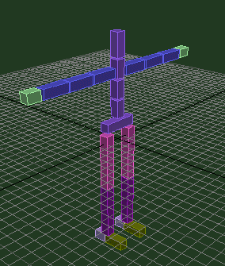
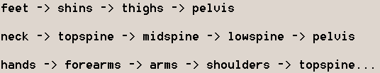

|
||
|
|
|
|
|
|
||
|
|
|
|
|
Creating a
Skeleton
|
|
by GWOT
|

|

There are two options for doing skeletal animation without a plugin. The first
is to use Max Bones which will basically allow you to whip up a quick skeleton
with a few clicks and drags, resulting in a series of linked bones. The second
option is to create each bone by hand using primitives, and linking them all
together with the link tool. For myself I prefer to use primitives (boxes
specifically) since their rotational positions during an animation are more
easily recognized. Also, with Max Bones you have to be careful when doing
transforms without the use of Inverse Kinematics because doing move transforms
will scale the bones (this is a bad thing, unless your mesh is Inspector
Gadget). This tutorial will deal with skeletons made from primitives.
Besides, its cooler to be able to make a skeleton from scratch and if you can
do this then max bones are a snap. You don't have to use this method but
knowing it will benefit your life somehow.
Creating the skeletonThe first thing you need for a skeleton is a mesh that will be attached. You really should build the skeleton with the mesh in view so that you are aware of proportion and the relationship of each bone to the body. This way you can fit each bone to the next right within the mesh as you build your skeleton. For bone measurements I recommend using L=2 W=2 and H=whatever length is required for the bone to fit the mesh. Copy as many bones as you can get away with in your skeleton, ie. right shin bone could be a copy of the left shin, top and middle spine bones could be copies of the base spine bone, etc. This saves time and ensures that the right and left sides of your skeleton are in equal proportions.The BonesHere is a list of the typical bones I used for our example skeleton:
Pivot Point AdjustmentThere are several ways in which you can arrange pivot locations in your skeleton. The easiest way (the one I'm going to use here) is to assume that the pelvis is going to be the root object in your skeleton, meaning that all other bones will be children of the pelvis. What this means is that all bones in the skeleton will move and rotate according to the location of the pelvis. If the pelvis moves, the whole skeleton moves. If the pelvis remains stationary then other bones can be moved independently but still maintain their relationship to the pelvis. Adjusting the pivot points of each bone is a matter of visualizing where each bone should bend within the heirarchy. The hierarchy of our example skeleton is as follows: As you can see here, every bone in the body is a child of the pelvis, since they are all linked indirectly to the pelvis through a heirarchical relationship. So for the hands to bend at the wrist we want the pivot to be closer to the forearm. For the forearm the bend is at the elbow so the pivot should go closer to the arm. For the arm the bend is at the shoulder so the pivot should go towards the shoulder. The shoulders are linked to the topspine bone so pivots should be moved closer to the topspine. The lowspine bone bends from the pelvis so the pivot should be moved closer to the pelvis. Basically the object here is that each bone in the heirarchy should have its pivot adjusted closer to its parent bone. Go to the Heirarchy panel and click on the pivot button. We only want to adjust the location of the pivots of our bones so click on the Affect Pivot Only button and begin selecting each bone and moving its pivot. Use the move transform tool and axis restrictions to keep your pivot adjustments more precise. Linking the BonesOnce all the pivots have been adjusted we are ready to link the bones. Keep in mind that the pelvis is the root or parent of the heirarchy we will create. Start with the bones furthest from the pelvis and link them to a parent until you have all bones linked heirarchically to the pelvis. Use the heirarchy diagram above for reference if you need it, tho linking is basically common sense here. To begin linking select a bone such as the foot then click the Select and Link button from the toolbar at the top of your screen. With the Link tool active you then click on the selected bone (foot in this case) and drag to its intended parent (the heel, or shin if you aren't using a heel bone) until the cursor turns green. Release the mouse button at this point and the parent bone will flash white indicating it has been selected as a parent in the link. This process should be repeated up the heirarchy until the entire leg has been linked with the pelvis as the parent or final link. Repeat for the other leg. Next select the neck or skull bone (whichever is farthest from the pelvis) and repeat the process again until the pelvis is the parent of the bones in the spine. With the arms you start linking at the hands and continue up to the shoulders, which are then linked to the topspine bone. Once the shoulders are linked to the spine you needn't continue to link down to the pelvis because the spine links have already been done. This should result in a finished skeleton. Try turning on the Inverse Kinematics tool and manipulating the skeleton with the move transform tool to make sure all the links are correct. When using inverse kinematics its best to use the extremity bones such as the hands, feet or head to move.Forward Kinematics and Inverse KinematicsThe skeleton is ready to animate at this point. There are two ways to go about this in Max. We can use forward kinematics which basically involves using the rotation transform tool, selecting a single bone and rotating it about its pivot on a single axis. Axis restriction is a big help here and can provide very precise rotations. We can also use inverse kinematics which enables you to achieve quicker results by selecting a child bone like a hand or foot and using the move transform tool to move it, while the parent bones up the heirarchy transform with it. Whichever method you feel most comfortable with to get the results you need. Using inverse kinematics to create the broader movements of limbs first then going back and using forward kinematics to tweak and refine the movements is an effective way to animate a skeleton. However, in order to use IK effectively you will first have to set some joint limitations to prevent your skeleton from going haywire when you try to animate it.Setting Joint LimitationsYou really only need to limit the joints in a skeleton if you plan on using IK since FK is based on rotations of individual bones around their respective pivots. IK however uses the complete child/parent relationship in a heirarchy to achieve skeletal transforms. If you limit the joint rotations in an IK chain before animating you will save yourself a headache later. It takes a little more time but is well worth it.
Achieving realistic human skeletal joint limits is simply a matter of
observation and learned behaviour. You already know the limits of the bones in
your body so all you have to do is transfer this knowledge to your Max
skeleton.
We want to limit the rotations of each axis so we start by checking the Limited
box for each axis. All we really need to do after this is use the From/To
spinners to set the limits of rotation from one angle thru to the next to
create a set of degrees that the bone will be able to rotate thru around a
single axis. Ignore the other options for now since they aren't really
necessary for our skeleton. As you hold the mouse down on a spinner you can
see in the active viewport that the selected bone rotates about its pivot
around the axis you are currently limiting. When you let go of the spinner the
bone snaps back into place but will be limited to rotation by the number of
degrees showing in the spinner's display box. Do the same with the To spinner
only going in the opposite direction. The best way to figure out how far you
should go with the spinners is to compare the movement of the bone you are
limiting with that of its real life counter part on your body. This is very
interactive and fun too! If you want to cheat you can probably obtain the real
joint limitations for a skeleton from any good anatomy text or a book on
character animation but I doubt you'd be reading this if you had those.
Once you've set your joint limitations your skeleton is ready to animate using
Fk or Ik. Try using IK and you will see that already the skeleton is
transforming much more realistically. There is one more thing we can do in the
IK section to make using Ik a little easier and that is to adjust the object
parameters at the top of the rollout. Select a shoulder bone and check the
Terminator box. Do this for both shoulders then go back and try moving the
hands with IK. You will see that the spine no longer transforms when you pull
on the hands. This is because we have halted the IK chain for the arms at the
shoulders. The shoulders are still linked to the spine and will transform if
the spine is moved. What we are basically doing here is turning the shoulders
into a pseudo root or parent object for the arm heirarchy - essentially a sub
IK chain that still depends on its parent objects. The pelvis is a natural
terminator already since it is the parent of all objects, that is why the spine
doesn't transform when you move the legs.
Broken HeirarchiesThere is one other method I will outline here that is a little more advanced and that is the use of a reverse or broken IK heirarchy for the legs. This is the method Paul Steed used in creating the Q2 player model. The skeleton is basically created the same way as above, except for the linking. Instead of linking the legs to the pelvis you will reverse the linkage and use each foot as a root object as well, with the shins as children of the feet and thighs as children of the shins. You will also have to move the bone pivots to the bottom of the bones since the parent/child relationship is reversed. You can do this with the arms as well but I don't recommend it as it often isn't necessary. The main advantage of a broken heirarchy in the legs comes in animation. Having the legs separate from the body can result in smoother more stable movements, however you have to deal with separate skeletons within your mesh then which means that if you move the feet you then have to move the thighs back into position with the pelvis to keep your mesh from deforming improperly. If you are new to skeletal animation I recommend avoiding this method until you are more comfortable with the hip centric method I outlined previously. |